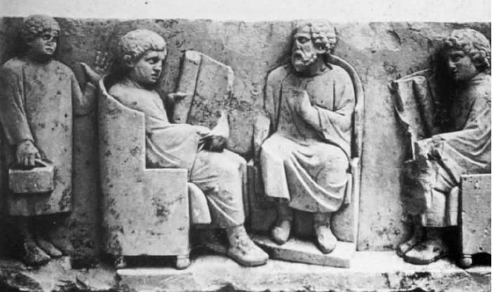

亚里士多德是个搞调查研究的科学家，他的大量时间都用于进行原始的第一手研究：他记录自己的观察，并且亲自进行许多解剖工作。但他不能把所有的叙述都建立在个人调查之上；就像其他知识探索者一样，他借用其他人的观察，采集其他人的研究精华。那么，亚里士多德的研究方法是什么呢？他是如何展开自己的工作的？
一个令人愉快的故事这样说道：亚历山大大帝“认识动物天性的欲望很强烈”，于是“在整个希腊和小亚细亚安排几千人——所有的打猎者、放鹰狩猎者或捕鱼者，所有的园林看护者、畜牧者、养蜂人、鱼塘看护者或鸟类饲养场主——供亚里士多德驱遣，这样就没有什么活的动物能不被他注意到”。亚历山大大帝不大可能做过这样的事，但这个故事说明了这样一个事实：亚里士多德在《动物研究》中经常引用养蜂人和渔夫、猎人和畜牧人以及那些农业生产者和动物饲养者的经验介绍。养蜂人对蜜蜂的习性很有经验，亚里士多德于是就依靠他们获得专业知识。渔夫观察到旱鸭子永远不能观察到的东西，于是亚里士多德就从他们那里搜集信息。在援引这些信息时，他保持了应有的谨慎。他说，一些人否认鱼的交配行为；但是他们错了。“他们很容易因为这样的事实而犯错误：这些鱼交配速度很快，因此，即便是许多渔夫也观察不到，因为他们谁也不会因为要积累知识而去观察这样的事。”然而，亚里士多德的许多著作都以这些专业人士的陈述为部分依据。
此外，亚里士多德还参考了文献资料。希腊的医生们曾作过一些人体解剖研究，于是亚里士多德便用他们的作品作为叙述人体结构的依据——他在详细地谈论血管系统时就大篇幅地引用了三个前辈。总的来说，亚里士多德的研究表明他阅读广泛：“他如此刻苦地学习……以至于他的房屋被称为‘读者之家’。”并且他有很多的藏书：“他是我们所知道的第一个收集书籍的人；并且他的榜样作用教会了埃及国王如何建立一个图书馆。”
就亚里士多德的动物学研究而言，书本学习的作用有限，因为那时几乎没有什么书籍能教给他什么。但其他学科则有许多书可以细细阅读。亚里士多德建议，“人们应当从文献中进行节选，分主题进行罗列，比如按商品分类或按动物分类”；他著作的目录表明，他本人按照这样的分类汇编了不少资料。他的许多讨论都是先简要地介绍对某个问题研究的历史，以简要的形式陈述前人所提出的观点。在《形而上学》中介绍原因的种类和性质时，他说道：
亚里士多德写了几篇关于知识史的文章。他早期的著作《论哲学》中有详细叙述哲学的起源和发展的文章；并且亚里士多德还写有关于毕达哥拉斯、德谟克利特、阿尔克迈翁和其他人的专论。这些著作只保存下一些片段；但亚里士多德那些专题中的历史概述无疑是利用这些专题写成的。仅就知识史进行判断的话，这些概述并非无可指摘（现代学者有时对之严责苛评）；但这样的指摘并不中肯：概述的目的不是对某个思想按年代进行记述；而是要给亚里士多德自己的研究提供一个起点，并作为他自己思考的一种校正。
并非总能有以往的探究可供参考。在一篇关于逻辑的专题文章的结尾，亚里士多德这样写道：
即使亚里士多德当得起此番赞扬，但这样自鸣得意却不是他的一贯风格。不过，我引用这段话是想通过含蓄的对比来表明，亚里士多德惯用的研究程序是建立在前人研究之上的。他在逻辑学上没法这样做；他只能在生物学的有限范围内这样做。在其他“在传统中发展”的学科中，他感恩戴德地接受传统留给他的一切。

图5老师和学生：公元2世纪的一座浮雕。亚里士多德“认为知识和教学是不可分割的”。
依靠传统，或者说使用以往的发现，对任何一个科学研究者来说都是一种谨慎的做法，也是一种绝对必要的做法。这在亚里士多德身上体现得更为深刻。他非常清楚，自己的地位是在众多思想家之后；他对知识史以及自己在其中的地位有着深刻的认识。他的建议，即留意倾听可信观点，不仅是个谨慎的建议：毕竟人天生就有欲望发现真理；自然本来不愿给人这样的欲望，让欲望的满足无法实现；于是，如果人们普遍地相信什么，那就表明正确的可能性比错误的可能性要大。
亚里士多德的信念直接反映他思想的两大特征。第一，他坚持他所说的“可信观点”的重要性。所有人或大多数人——至少是所有或大多数聪明人——所坚信的事物自然是“可信的”；因此亚里士多德认为，其中必定有些道理。在《论辩》这部主要探讨如何就“可信观点”进行推理的作品中，他建议我们收集这样的观点，然后用做调查研究的出发点。在《尼各马可伦理学》中，他暗示说，至少在实践哲学中，可信观点既是研究的出发点也是研究的终点：“如果问题解决了，可信言论还成立，该问题就已经有了足够的证据。”在我们的伦理学调查中，我们会收集相关的“可信观点”；我们会吹开糠皮——祛除谎言的外衣；留在地面上的是真理的谷粒，这就构成了探究的结果和总结。
第二，亚里士多德清楚地明白传统对知识积累的重要性。
他又论述道：
知识的获得是艰难费力的，学科发展因而缓慢。第一步是最艰难的，因为那时没有什么能指导研究过程。后来的努力就轻松些，但即便如此，作为个体，我们知识的积累贡献还是很小的：蚂蚁堆积蚁丘是集体的功劳。